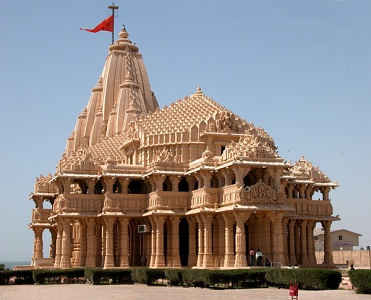

Somnath Temple, Gujarat
Another popular Shiva temple in the country is the jyotirlinga Somnath Temple located in Saurahtra in Gujarat. It is a holy pilgrimage of Hindus and has come across several attacks in its history. The temple, which lies on the sea shore, was built in its current form in 1947.